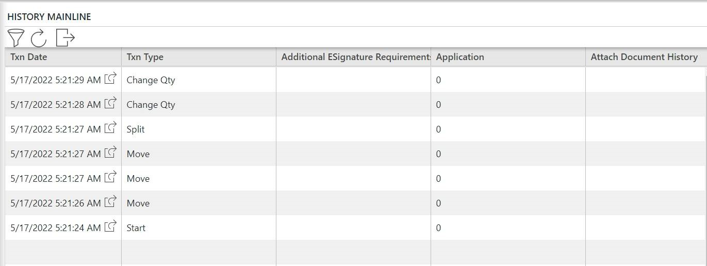

Configuring the Manufacturing and Resource Audit Trails
The Audit Trail Configuration page contains a History Mainline section and a Transaction Details section. The History Mainline section enables you to select the fields you want to display in the History Mainline grid in the manufacturing or resource audit trails. The Transaction Details sections enables you to configure the additional information that displays when you select a transaction in the History Mainline grid in the manufacturing or resource audit trails.
The History Mainline grid, in the manufacturing and resource audit trails, lists the transactions performed on a container, carrier, or event record and provides historical information for those transactions. The Portal includes the transaction date (Txn Date) information by default. You can configure the information displayed in the audit trail according to your business needs.
This image shows an example default History Mainline grid for a container.

| Note: | You can specify a default audit trail configuration instance for employees using the Employee modeling object. |
This table defines the fields on the Audit Trail Configuration page.
Refer to "Common Fields on Modeling Pages" for information on the fields common to all modeling objects.
|
Field |
Definition |
Type |
|
History Mainline |
||
|
|
Enables you to select the fields to display in the History Mainline grid in the manufacturing or resource audit trails. Check boxes enable you to select the fields you want to add or remove. |
Required |
|
Transaction Details |
||
|
|
Tree enabling you to select the history object/ transaction you want to configure, and grids enabling you to select the fields to display in the Summary/Details tab for the transaction selected in the History Mainline grid in the manufacturing or resource audit trails. Check boxes enable you to select the fields you want to add or remove. |
Optional |
On the Mfg Audit Trail page, the application typically displays the Summary/Details tab below the History Mainline grid when you select a transaction in the History Mainline grid. The Summary/Details grid contains history information for the selected transaction.
The history objects or transactions to be configured are displayed in a tree outline view. The objects list can be expanded and the history information for the child objects can also be configured to be displayed in the Summary/Details grid.
This image shows an example of the Summary/Details tab for a container transaction selected in the History Mainline grid.

How to Define an Audit Trail Configuration Instance
Follow these steps to create a new Audit Trail Configuration instance:
| 1. | Open the Audit Trail Configuration page. The Audit Trail Configuration page appears within the Modeling page. |
| 2. | Click New. Blank fields appear for you to define a new instance. |
| 3. | Enter a name for the audit trail configuration instance in the Audit Trail Configuration field. |
| 4. | Enter optional information according to your business requirements. Refer to the field definitions table for information on the optional fields. |
| 5. | Click Save. The new instance appears in the list of Audit Trail Configuration instances. |
How to Configure the History Mainline Grid
Follow these steps to configure a history mainline grid:
| 1. | Perform the "How to Define an Audit Trail Configuration Instance" procedure. Or Select an instance from the Audit Trail Configurations list. The application displays all the fields available and all fields selected to be displayed in the History Mainline grid. The application includes the TxnDate field by default. |
| 2. | Do one of the following: |
| • | Select the Available Fields check box to add all available fields. The application moves all the fields from the Available Fields list to the Selected Fields list. |
| • | Select multiple fields in the Available Fields list and click the Add button. The application moves those fields to the Selected Fields list. |
| • | Select the desired field in the Available Fields list and click the Add button. The application moves the field to the Selected Fields list. |
| 3. | Select any field you want to move and use the Drag and Drop arrow buttons to change the field order. |
| Note: | The application displays the columns in the History Mainline grid based on the order of the fields in the Selected Fields List. |
| 4. | To delete any selected field, use the Remove button. |
| 5. | Click Save. The application updates the History Mainline grid. |
| 6. | Refer to "How to Configure Transaction Information" for this history grid. |
How to Configure Transaction Information
Follow these steps to configure transaction information:
| 1. | Select an instance from the Audit Trail Configuration instance list. |
| 2. | Expand the Transaction Details section. The history objects (transactions) for which summary and details can be displayed are organized in a tree structure. When a transaction is selected, the application displays all the fields available in the Available Fields list. For the parent object, HistoryDetails, the DisplayName field is displayed by default. |
| 3. | Select the history object you want to configure in the Transactions list. |
| 4. | Do one of the following: |
| • | Select the Available Fields check box to add all available fields. The application moves all the fields from the Available Fields list to the Selected Fields list. |
| • | Select multiple fields in the Available Fields list and click the Add button. The application moves those fields to the Selected Fields list. |
| • | Select the desired field in the Available Fields list and click the Add button. The application moves the field to the Selected Fields list. |
| 5. | Select any field you want to move and use the Drag and Drop arrow buttons to change the field order. |
| Note: | The application displays the columns in the Summary/ Details grid based on the order of the fields in the Selected Fields List. |
| 6. | To delete any selected field, use the Remove button. |
| 7. | Click Save. The application updates the history object (transaction). |
| 8. | Repeat steps 3-6 for each transaction you want to configure. |